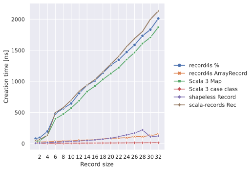
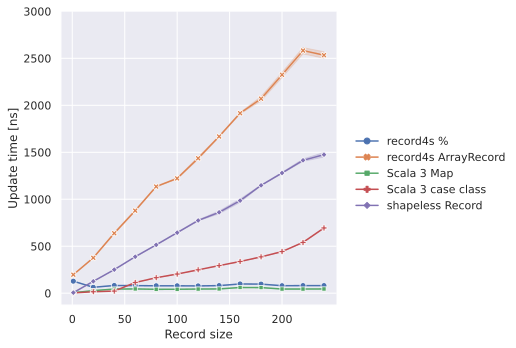
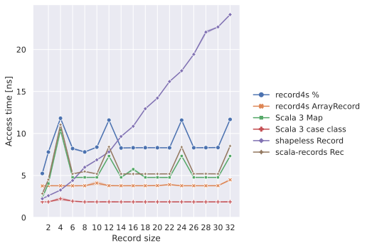
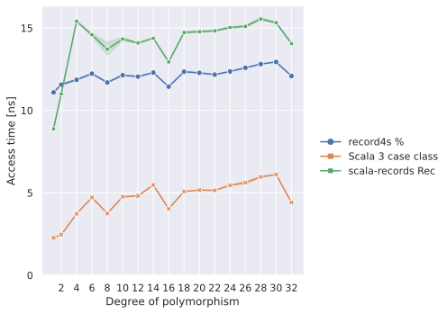
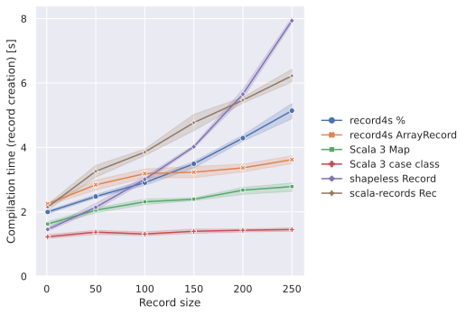
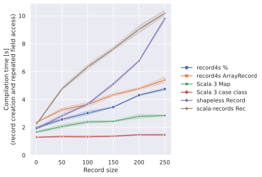
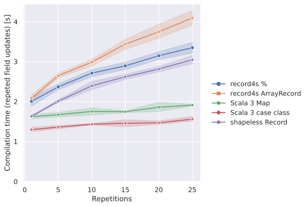
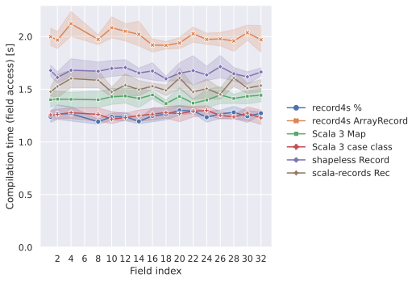

Full Benchmark Result
The source code of the benchmarks is available in the following directories:
See Performance for the discussion on the benchmark results.
Runtime metrics
Runtime metrics from [Karlsson '18]





Other runtime metrics
Compile-time metrics
Compile-time metrics from [Karlsson '17]

Compile-time metrics from scala-records-benchmarks

Other compile-time metrics

